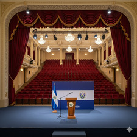

السلفادور .. ماذا بعد العمري ؟

أعلن القصر الرئاسي بالسلفادور صباح الخميس الماضي عن تنازل الأزهر العمري عن كرسيه الرئاسي ، مثيراً بذلك حالة حزن عارمة ، ومعلناً عن نهاية عهد مليئ بالرخاء والإزدهار.
رغم أن توليه لكرسي الرئاسة كان مخالفاً للدستور السلفادوري ، إلا أنه قام بإعادة بناء السلفادور والرقي بها إلى مصاف الدول الكبرى ويشهد له بذلك أعداءه قبل أصدقائه.
وفي مقابلة حصرية مع الحسين نيوز ، قال عندما سئل عن سبب تنازله :
" لأنني لم أكن الرئيس " ، وقال أيضا : رسالتي للشعب السلفادوري أن يحافظ على مبادئه وقيمه ، لكي تبقى البلاد بعيدة عن أيدي العابثين " ، وأضاف : " صدقوني ، لم أكن الرئيس ، هناك أشخاص بالأعلى ... "
وعلق المحلل السياسي محمود التوبي على كلام العمري قائلاً : "يلمح العمري في كلامه لأمر لست متأكداً منه ، لكن يبدو أنه خطير"
كما علق سفيان الراشدي المترشح الرئاسي السابق :" يبدو أنني محظوظ لأنني لم أصبح الرئيس "
ويذكر أن مبيعات " الشاوارما " قد انخفضت بشكل حاد بعد استقالة الرئيس العمري ، كما أعلنت بعض المطاعم عن إفلاسها تماماً ، والبعض الآخر أغلق حداداً !
📸 azh_am_85
📸 z.5x_5
📸 7m.7hd